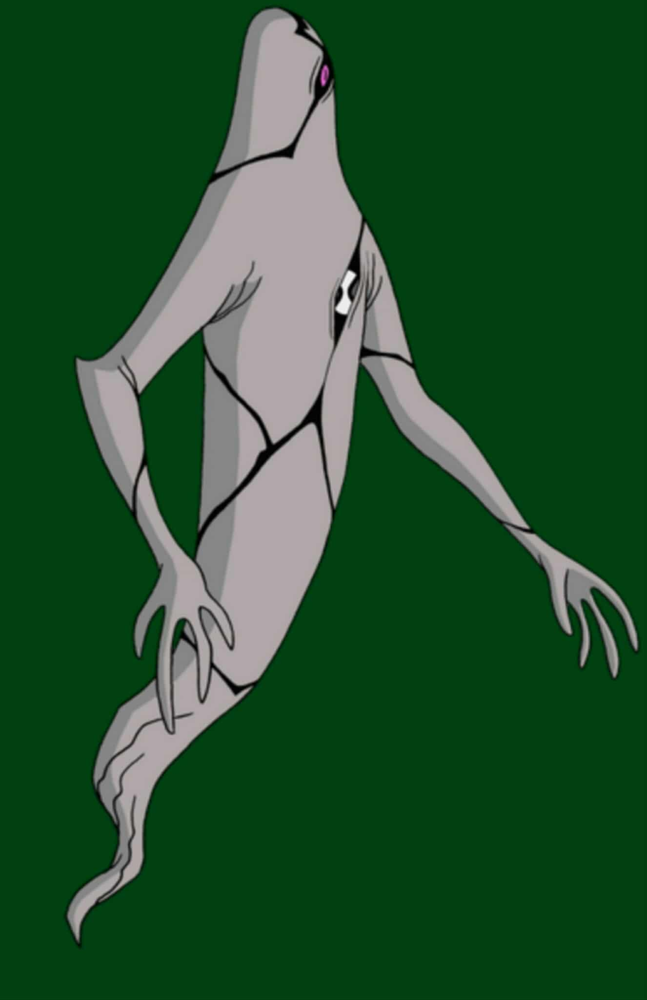

1.General Info:
Name: Ghostfreak (also known as Zs’Skayr when in true form)
Species: Ectonurite
Home Planet: Anur Phaetos
First Appearance: Quit Clowning Around (original Ben 10 series)
2.Appearance
Pale/greenish-ghostlike humanoid with black lines on his body.
Has a protective “secondary skin” layer that masks a more terrifying true form underneath.
Sharp claws and a tail or tail-like extension; often shows one large glowing eye.
3.Abilities & Powers
1.Intangibility & Invisibility: Can phase through objects & become invisible.
2.Body Possession: Can take over other beings, control their movements, and even erase consciousness in some cases.
3.Electronic Disruption: Because of his intangibility, can pass through electronics & disrupt or damage them.
4.Tentacles / Appendages: Can use tentacles from his chest or under his skin to grab or stab.
5.Flight & Levitation: Can fly or float through the air; useful for stealth & mobility.
6.Regeneration: Can heal from damage, including regeneration of skin.
7.True Form Powers: When his secondary skin is removed, his abilities are stronger; can emit energy beams, enhanced telekines
4.Weaknesses
1.Certain substances can solidify his protoplasm, cancelling out intangibility & invisibility.
2.Removing his protective skin leaves him vulnerable, especially to sunlight.
3.If caught off guard (when not using his intangibility/invisibility), he can be hit or trapped.
4.He’s vulnerable to electricity & certain magical attacks.
5.Beings that can also go intangible make his phasing useless.